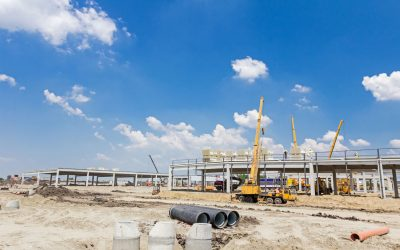

Oceans are polluted by oil on a daily basis from oil spills, routine shipping, run-offs and dumping. Oil spills make up about 12% of the oil that enters the ocean. The rest come from shipping travel, drains and dumping.
MARINE DUMPING & WATER POLLUTION
Dumping of litter in the sea can cause huge problems. Litter items such as 6-pack ring packaging can get caught in marine animals and may result in death.
UNDERGROUND STORAGE LEAKAGES
A tank or piping network that has at least 10 percent of its volume underground is known as an underground storage tank (UST). They often store substances such as petroleum, that are harmful to the surrounding environment should it become contaminated.

INDUSTRIAL WATER POLLUTION
Industry is a huge source of water pollution, it produces pollutants that are extremely harmful to people and the environment. Many industrial facilities use freshwater to carry away waste from the plant and into rivers, lakes and oceans.